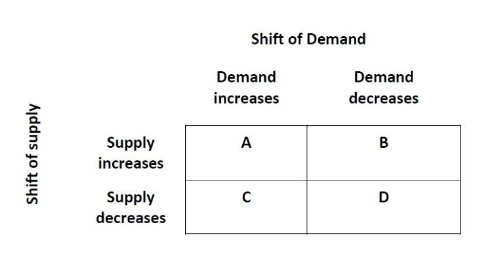
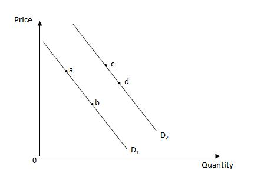
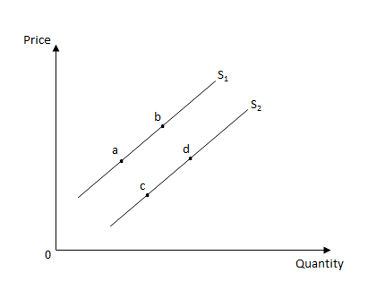

Quiz
Question 1
Which of the following is most likely to be an inferior good?
soft drinks
airline travel
used clothing
restaurant meals
a subscription to the Wall Street Journal
Question 2
A surplus of shoes will cause _____
a decrease in the demand for shoes.
a rightward shift of the supply curve of shoes.
a decrease in the price of shoes.
a decrease in the supply of shoes.
an increase in the price of leather.
Question 3
Table 4.6

Refer to Table 4.6. In which of the following combinations is the change in the equilibrium quantity of a good indeterminate?
Box B and Box C
Box A and Box B
Box A and Box C
Box C and Box D
Box A and Box D
Question 4
Exhibit 4.1

Refer to Exhibit 4.1 for the demand curves of baby formula. Which of the following changes will be caused by the discovery that breast milk provides more protection against a life-threatening disease than baby formula?
a movement from point b on the demand curve D1 to point c on the demand curve D2
a movement along the demand curve D1 from point a to point b
a movement along the demand curve D2 from point d to point c
a shift of the demand curve from D2 to D1
a shift of the demand curve from D1 to D2
Question 5
According to the law of supply, the quantity supplied is _____ related to price, other things constant.
negatively
indirectly
inversely
never
directly
Question 6
Exhibit 4.1
Refer to Exhibit 4.1 for the demand curves of baby formula. Which of the following changes is likely to be caused by an increase in the birth rate?
a movement along the demand curve D1 from point a to point b
a shift of the demand curve from D1 to D2
a shift of the demand curve from D2 to D1
a movement along the demand curve D2 from point d to point c
a movement from point b on the demand curve D1 to point c on the demand curve D2
Question 7
Table 4.6
Refer to Table 4.6. In which of the following combination does the equilibrium quantity increase?
Box A
Box D
Box C
Box B
Equilibrium quantity does not increase in any combination.
Question 8
Suppose the market for a good is in equilibrium. Which of the following is most likely to occur if both the demand for and the supply of the good decrease during a particular point in time?
The equilibrium quantity will decrease.
The equilibrium price will increase.
Both the equilibrium price and quantity will increase.
The equilibrium quantity will increase.
The equilibrium price will decrease.
Question 9
Suppose the market for wheat is initially in equilibrium. In which of the following situations will the equilibrium price of wheat increase and the change in the equilibrium quantity of wheat be indeterminate?
if supply remains constant and demand rises
if supply and demand both decline
if supply rises and demand declines
if supply and demand both rise
if supply declines and demand rises
Question 10
If butter and margarine are substitute goods, an increase in the price of butter is most likely to _____
increase the quantity of margarine demanded.
shift the demand curve for margarine leftward.
decrease the quantity of margarine demanded.
decrease the price of margarine.
shift the demand curve for margarine rightward.
Question 11
Exhibit 4.3

Refer to Exhibit 4.3, which shows the supply curves of baby formula. Which of the following changes is likely to result from an increase in the number of firms producing baby formula?
a movement from point a to point b on the supply curve S1
a movement from point c to point d on the supply curve S2
a movement from point b to point a on the supply curve S1
a leftward shift of the supply curve from S2 to S1
a rightward shift of the supply curve from S1 to S2
Question 12
Exhibit 4.3
Refer to Exhibit 4.3, which shows the supply curves of baby formula. The development of a more efficient production technology for producing baby formula is likely to cause _____
a movement from point c to point d on the supply curve S2.
a movement from point b to point a on the supply curve S1.
a movement from point a to point b on the supply curve S1.
a leftward shift of the supply curve from S2 to S1.
a rightward shift of the supply curve from S1 to S2.
Question 13
A movement along the demand curve for a good can be attributed to a change in _____
the quantity demanded of the good.
the income and preference of a consumer.
the substitution effect of consuming the good.
the demand for the good.
the opportunity cost of producing the good.
Question 14
Table 4.6
Refer to Table 4.6. In which of the following combinations is the change in the equilibrium price of a good indeterminate?
Box A and Box B
Box B and Box C
Box A and Box C
Box A and Box D
Box C and Box D
Question 15
Exhibit 4.3
Refer to Exhibit 4.3, which shows the supply curves of baby formula. Which of the following is likely to result from an increase in the price of baby formula?
a rightward shift of the supply curve from S1 to S2
a movement from point a to point b on the supply curve S1
a movement from point d to point c on the supply curve S2
a movement from point b to point a on the supply curve S1
a leftward shift of the supply curve from S2 to S1
Question 16
Exhibit 4.1
Refer to Exhibit 4.1 for the demand curves of baby formula. Which of the following changes is likely to happen if the price of baby formula increases?
a shift of the demand curve from D2 to D1
a movement from point b on the demand curve D1 to point c on the demand curve D2
a movement along the demand curve D1 from point a to point b
a shift of the demand curve from D1 to D2
a movement along the demand curve D2 from point d to point c
Question 17
Which of the following will cause a movement along the demand curve?
consumer tastes
a change in price
the number or composition of consumers in the market
the money income of consumers
consumer expectations
Question 18
The market supply curve of a particular product indicates the total quantities _____
that sellers are willing to offer for sale at a fixed price.
that are actually sold during different time periods.
that sellers are willing and able to offer at alternative prices.
of complements offered for sale.
that buyers are willing to purchase at alternative prices.
Question 19
A shortage of textbooks is most likely to cause _____
an increase in the price of textbooks.
a decrease in the price of paper.
a decrease in the supply of textbooks.
an increase in the cost of printing.
a decrease in the demand for textbooks.
Question 20
Exhibit 4.1
Refer to Exhibit 4.1 for the demand curves of baby formula. If baby formula is an inferior good, then an increase in consumer income is likely to cause which of the following changes?
a shift of the demand curve from D1 to D2
a movement along the demand curve D1 from point a to point b
a movement along the demand curve D2 from point d to point c
a movement from point b on the demand curve D1 to point c on the demand curve D2
a shift of the demand curve from D2 to D1